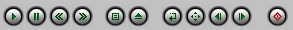
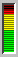
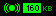
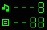

This is PM123's main window on startup. The window has several controls and lots of status information. The main playing controls are these:
From left to right: play, pause, rewind, fast forward, open/close palylist, load a file, repeat mode, randomize playlist, next song, previous song and power off. Volume can be controlled clicking and dragging the volume bar:
While playing there are some status indicators such as stereo/mono indicator and bitrate indicator or playlist index/total indicators:

You can right click the player to open up the main menu.
Keyboard shortcuts: We have defined some keyboard shortcuts to be used from the main window: